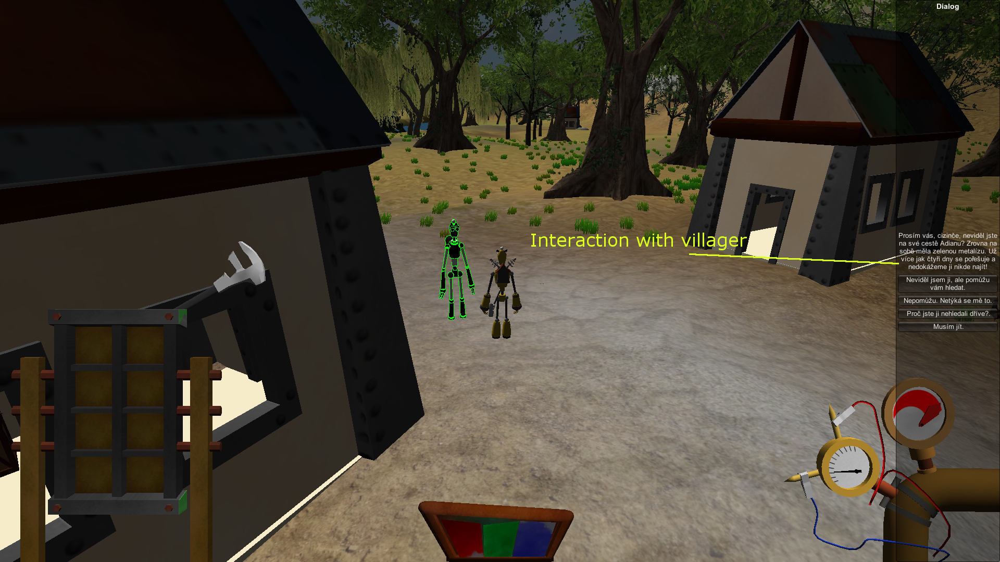

The Clockwork manual
Controls
- Movement/Camera:
- W - Forward
- S - Backward
- A - Left
- D - Right
- Space - Jump
- Shift - Hold to sprint
- LMB - Hold to rotate camera
- MMB - Scroll to zoom camera
- Combat/Interact:
- LMB - Attack
- RMB - Interact
- H - Un/sheath active weapon
- Q - Swap weapons
- R - Drop active weapon
- Inventory/Dynamo/Diary:
- RMB - Click on item to drop it
- F - Show/Hide dynamo
- E - Spin the dynamo crank
- Jump - Show quest diary
Description
- Combat:
- Combo Attack
- Every combo attack is formed from up to 3 attacks. With unsheathed weapon press LMB up to 3 times in quick succession to perform combo attack.
Every consecutive attack is more powerful than those before.
- Powerful Attack
- To perform powerful attack hold LMB with unsheathed weapon. If you hold LMB long enough, hero will perform Powerful attack.
Powerful attack consumes great amount of energy.
- Hero information:
- Inventory
- Contains up to 8 items, LMB click on item drops it on ground.
- Oil Pressure:
- Hero is a robot. Internal mechanisms require oil to be able to work. When hero is damaged, he leaks some oil.
Loosing too much oil will cause permanent irreversible damage to internal components.
State of oil pressure can be seen on oil pressure gauge.
- Dynamo and battery:
- Everything our hero does requires some amount of energy. Fighting, running, walking even standing. Some action consumes more energy than others.
When you run out of energy, your hero stops and cant do anything. You can save him by spinning the crank of the dynamo (E) to generate some electricity.
Dynamo will pop up when hero depletes all his energy or when you press F.
Game is not paused at any moment! Hero is vulnerable when he has no energy!
- Diary:
- Diary contains all active and completed quests. Press J to show.
- Interaction:
- Hero can interact with many things in the world. From speaking with other robots, to picking up things or even he can change his body parts for different one.
But not all interactions are good or safe.
